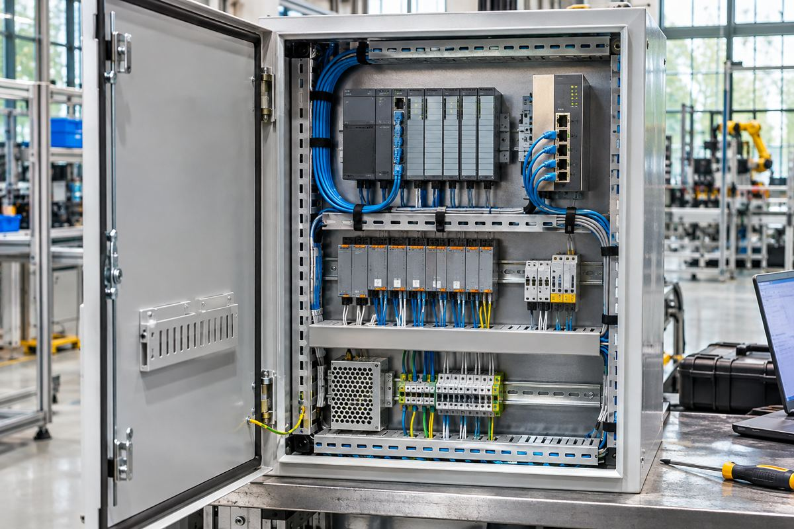

산업용 연결 / EXPLAINED
TI, 펌웨어로 통신 방식 바꾸는 산업용 이더넷 모듈 공개
TICS100MOD는 연말 공급 예정이다. 함께 발표한 IO-Link 칩의 사전 생산 물량과는 출시 단계가 다르다.

텍사스 인스트루먼트(TI)가 11월 5일 EtherCAT, EtherNet/IP, PROFINET을 하나의 하드웨어에서 지원하는 TICS100MOD 통신 모듈을 발표했다. 펌웨어를 바꾸고 부팅할 때 필요한 프로토콜을 선택하는 방식이다. TI는 모듈을 2026년 말까지 공급할 계획이라고 밝혔다. 함께 공개한 TIOM2212 IO-Link 마스터는 사전 생산 물량을 지금 구할 수 있어 두 제품의 공급 단계를 구분해야 한다.
TI는 공장 자동화와 자동차, 전자기기 등에 쓰이는 반도체를 공급하는 기업이다. 이번 제품은 가정용 공유기나 노트북의 인터넷 속도를 높이는 액세서리가 아니다. 생산 설비의 제어기, 센서, 액추에이터가 데이터를 주고받도록 장비 안에 넣는 부품이다. 액추에이터는 제어 명령을 실제 움직임으로 바꾸는 장치다. 공장에서 중요한 것은 데이터를 빨리 보내는 것뿐 아니라 정해진 시점에 맞춰 안정적으로 교환하는 일이다.
하드웨어는 같아도 말하는 규약은 다르다
산업용 이더넷은 물리적인 연결이 비슷해도 장비가 사용하는 통신 규약에 따라 소프트웨어와 호환성이 달라진다. EtherCAT, EtherNet/IP, PROFINET은 이름만 다른 동일 기능이 아니다. TICS100MOD의 접근법은 지원하는 규약에 맞춰 펌웨어를 구성해 같은 모듈 설계를 활용하게 하는 것이다. 세 규약을 아무 설정 없이 동시에 모두 처리한다고 해석해서는 안 된다.
공식 발표에 따르면 모듈은 AM2612 마이크로컨트롤러와 DP83826AI 이더넷 물리 계층 부품을 기반으로 한다. 두 개의 Arm Cortex-R5F 코어와 외부 메모리를 통합해 프로토콜 소프트웨어를 실행한다. 시스템온모듈, 즉 SoM은 이런 핵심 부품을 작은 모듈 단위로 묶어 장비 설계자가 사용할 수 있게 하는 형식이다. 완성 장비 전체를 대체하는 독립적인 공장 제어 컴퓨터를 뜻하지는 않는다.
센서 가까이에서 맡는 일은 별도다
TIOM2212는 두 채널의 IO-Link 마스터다. 상위 산업용 네트워크와 센서·액추에이터 쪽을 연결하는 역할을 겨냥한다. 이더넷 모듈과 함께 발표됐지만 같은 부품의 다른 이름은 아니다. 두 제품의 기능과 출시 단계를 섞으면 구매와 설계 계획을 잘못 세울 수 있다. 사전 생산 물량이 있다는 설명도 최종 양산 장비 검증을 대신하지 않는다.
편집부의 분석으로는 여러 시장에 장비를 판매하는 업체가 통신 방식마다 별도 보드를 만드는 부담을 줄일 가능성이 있다. 다만 지원 모듈을 쓴다고 모든 완성품 인증이나 고객사의 상호운용 시험이 자동으로 끝나는 것은 아니다. 기존 제어 소프트웨어와의 연결, 펌웨어 관리, 유지보수 절차도 설계해야 한다. 실제 절감 비용과 개발 기간은 공개된 일률적인 수치가 없으므로 특정 비율로 제시하지 않는다.
TI는 11월 10~13일 뮌헨 일렉트로니카에서 관련 기술을 시연할 예정이다. 이 일정은 전시일이며 TICS100MOD의 확정된 일반 판매일과 같지 않다. 공식 제품 페이지도 미리보기 단계로 표시돼 있다. 도입을 준비하는 독자는 연말 공급 계획과 현재 주문 가능한 부품을 분리해 확인하고, 필요한 프로토콜과 소프트웨어 자료가 자신의 설계에 실제로 준비돼 있는지 검토해야 한다.